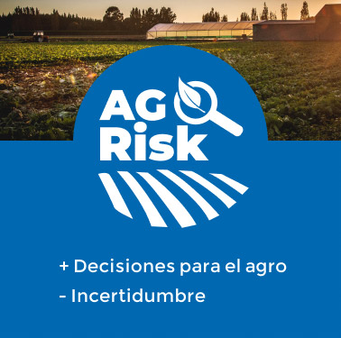

av_timer
Consultar Puntaje
search
Historial de Consultas
pie_chart
Reportes
person_pin
Pedro
expand_more
$50.000
¿Necesitas ayuda?
Cerrar Sesión
exit_to_app
Tu puntaje
Tu cultivo de
arroz
presenta el siguiente perfil de riesgo
Tu puntaje es
AA
Factores de análisis de riesgo
Tipo de suelo
2
Altura sobre el nivel del mar
3
Densidad de siembra
3
Vulnerabilidad a factores climáticos
1
Sistema de riego
5
Ver reporte
search
Descargar reporte
arrow_downward